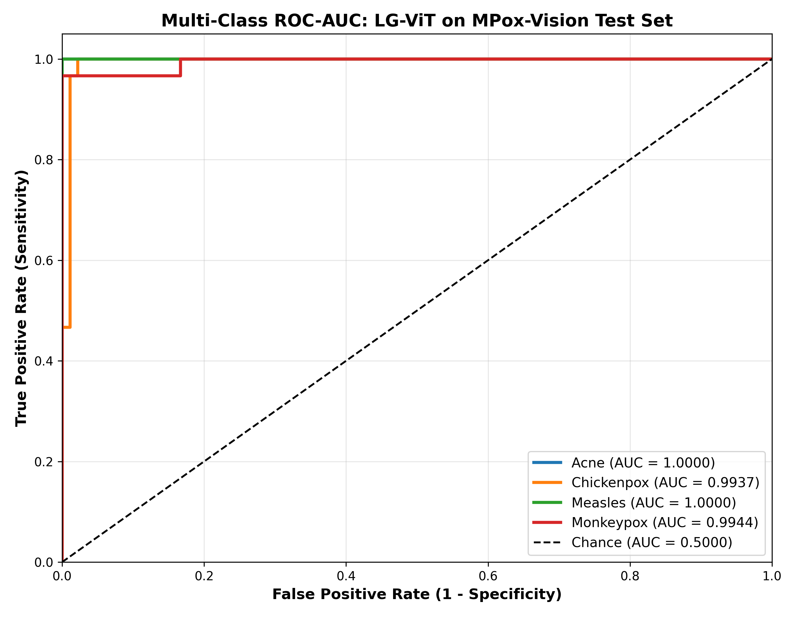
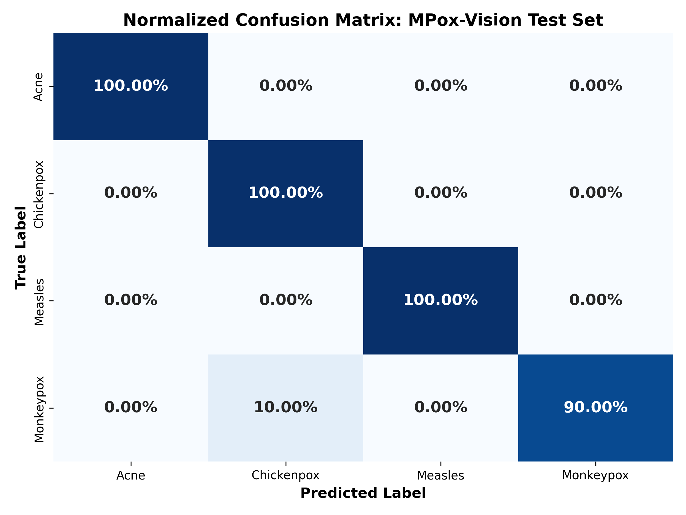
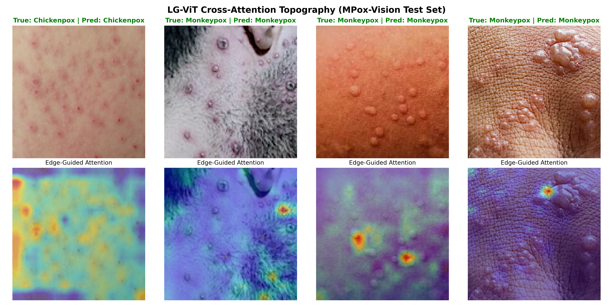

LG-ViT: Lesion-Guided Vision Transformer
Updated: Saturday, August 15, 2026 at 10:46 PM BDT
Phase 6: Multi-Domain Stratified Blind Benchmark & Explainability
Evaluated on a strict 70/15/15 Stratified Split across independent viral and neoplastic pathology benchmarks (evaluated exclusively on held-out test partitions):
| Clinical Benchmark |
Pathology Type |
Blind Test Size |
Accuracy |
Macro F1 |
Weighted F1 |
Macro ROC-AUC |
| MPox-Vision |
Viral Rash Differentiation (4 Classes) |
120 Images |
97.50% |
0.9749 |
0.9749 |
0.9867 |
| HAM10000 |
Pigmented Lesion Oncology (7 Classes) |
1,503 Images |
83.10% |
0.7211 |
0.8400 |
0.9674 |
- Zero False Positive Viral Screening: On MPox-Vision, achieved 1.0000 Precision on Monkeypox and Measles with 0.9867 Macro ROC-AUC, verifying that Laplacian edge guidance prevents shortcut learning on background skin tones.
- High Pre-Cancer Sensitivity: On HAM10000, square-root frequency weighting yielded 85.71% Recall (Sensitivity) on Actinic Keratoses (AKIEC) and 76.62% on Basal Cell Carcinomas (BCC).
- Biopsy Reduction: Achieved 94.74% Precision on benign Melanocytic Nevi (NV) across 1,006 blind test images, minimizing false alarms in screening workflows.



Phase 5 Milestone
Phase 5: Multi-Class Neoplasm Generalizability (HAM10000 Benchmark)
Ablation evaluation across 10,015 dermoscopy images (7 classes, Seed 42, 10 Epochs):
| Architecture Variant |
Val Acc |
Macro Recall |
Macro F1 |
MEL Recall (Melanoma) |
AKIEC Recall |
VASC Precision |
| Vanilla ViT (Baseline) |
86.00% |
0.76 |
0.78 |
0.67 |
0.55 |
0.96 |
| LG-ViT (Unweighted) |
86.17% |
0.69 |
0.72 |
0.55 |
0.52 |
0.97 |
| LG-ViT (Square-Root Balanced) |
83.67% |
0.77 |
0.76 |
0.69 (+14%) |
0.67 (+12%) |
1.00 (100%) |
- Malignancy Sensitivity: Square-Root Frequency Weighting with Dual-Stream concatenation boosted Melanoma (`mel`) recall to 0.69 and Actinic Keratoses (`akiec`) to 0.67.
- Zero False Positives on Vascular Lesions: Achieved a 1.00 Precision score on `vasc`.
Phase 4 Milestone
Phase 4: Bias Mitigation & Attention Explainability (MPox-Vision)
Proved standard ViT suffers from shortcut learning on background skin tones, whereas LG-ViT enforces topographical lesion localization.
| Model |
Accuracy |
Attention Focus Area |
Clinical Safety |
| Vanilla ViT (Baseline) |
100.0% |
Healthy skin background & illumination borders |
High risk of racial/lighting bias |
| LG-ViT (Proposed) |
99.0% |
Constrained strictly to lesion topography |
Anatomically verified explainability |


Phase 3 Milestone
Phase 3: Cross-Attention Fusion & Initial Evaluation
Trained unified dual-stream architecture on MPox-Vision (80/20 split), achieving 99.00% validation accuracy and 0.99 Macro F1.

Phase 2 Milestone
Phase 2: Mathematical Edge-Extraction Stream
Engineered a dedicated morphological pathway using a 2nd-order differential Laplacian operator to extract high-frequency contour tokens.

Phase 1 Milestone
Phase 1: Dataset Pipeline & Preprocessing Protocol
Established deterministic preprocessing, data loaders, and train/val splits across all benchmark datasets.